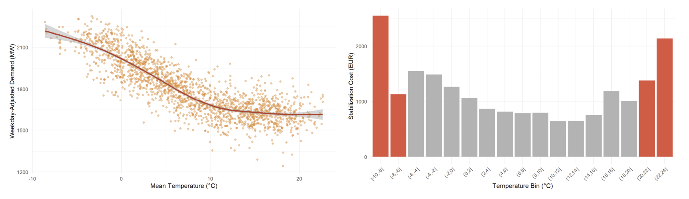
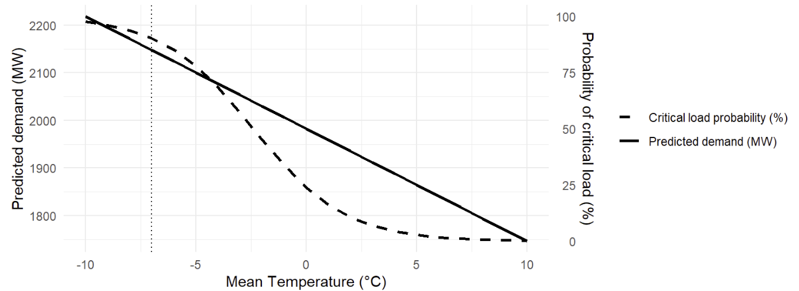

Forecasting demand and critical-load risk
Weather is one of the strongest external drivers of electricity demand. This project presents an end-to-end analysis—from data preparation and modeling to scenario-based interpretation—designed to support operational planning under cold-weather stress conditions.
The full analysis was developed as a reproducible R Markdown report and exported as an interactive HTML document.
 GitHub
GitHub
I owned the analysis pipeline end-to-end, from data cleaning and feature engineering to modeling, validation, visualization, and scenario-based interpretation.
Operations and planning stakeholders (energy system / grid context)
R Markdown, Energy dashboard
3 weeks
Electricity demand does not respond to temperature in a simple linear way, especially under extreme cold conditions. This makes planning difficult using averages alone.
💡 Solution: I modeled demand as a function of temperature with approaches that capture non-linear behavior and validated fit using out-of-sample checks.
A single predicted demand value is hard to operationalize without understanding the likelihood of crossing critical thresholds.
💡 Solution: I estimated the probability of entering a critical-load regime and visualized risk across temperature scenarios.
The analysis shows a clear temperature–demand relationship and highlights how risk increases rapidly under extreme cold. Below are selected visuals; the full methodology and appendix are available in the R Markdown report.

Electricity demand increases sharply as temperature decreases, showing a strong nonlinear inverse relationship between temperature and weekday-adjusted demand. Average stabilization costs rise substantially during extreme cold conditions, revealing a U-shaped cost response across temperature regimes.

Predicted electricity demand (solid line) and probability of entering a critical load regime (dashed line) across cold temperatures. The vertical line marks the −7°C operational scenario.
This project demonstrates how temperature-driven dynamics translate into electricity demand growth, rising stabilization costs, and systemic risk in the Swiss power system.
Report Overview
The results section highlights three key insights:
First, electricity demand exhibits a strong and nonlinear inverse relationship with temperature. As shown in the demand–temperature curve, colder conditions lead to a rapid increase in weekday-adjusted electricity demand, confirming temperature as a critical driver of short-term load dynamics.
Second, stabilization costs display a pronounced U-shaped pattern across temperature regimes. Costs remain relatively moderate under mild conditions but rise sharply during extreme cold periods, indicating increasing reliance on secondary control energy and higher balancing expenditures when system flexibility becomes constrained.
Finally, the risk curve illustrates how system vulnerability escalates under cold stress. While demand increases approximately linearly as temperatures fall, the probability of entering a critical load regime rises nonlinearly, approaching near certainty under extreme cold conditions. This divergence highlights that operational risk grows disproportionately faster than demand itself.
Together, these results show how extreme temperature events can simultaneously strain physical system capacity and amplify economic risk.
The full analysis—including data processing, model estimation, and operational scenario simulation—is documented in the accompanying R Markdown report.
View full technical report